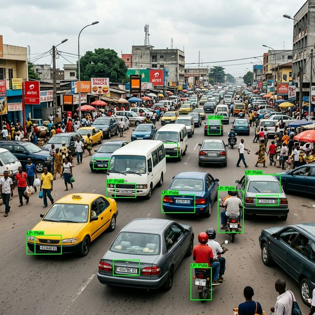

Plate Detection.
AI / Computer Vision • Reconnaissance Automatique
Un système de détection et reconnaissance automatique de plaques d'immatriculation utilisant un modèle YOLO fine-tuné. Conçu pour fonctionner avec une grande précision dans des conditions d'éclairage variables.

À propos du projet
Ce projet de Computer Vision vise à automatiser la détection et la reconnaissance de plaques d'immatriculation à partir d'images et de flux vidéo. Le système utilise un modèle YOLO (You Only Look Once) spécialement fine-tuné sur un dataset de plaques d'immatriculation pour atteindre une grande précision de détection.
L'application web construite avec Django permet aux utilisateurs de soumettre des images ou des flux vidéo et d'obtenir en temps réel la détection et la lecture des plaques d'immatriculation. Le modèle a été entraîné et optimisé pour fonctionner efficacement dans des conditions d'éclairage et des angles variés.
Fonctionnalités clés
- Détection en temps réel des plaques d'immatriculation
- Modèle YOLO fine-tuné pour une haute précision
- Interface web Django pour le traitement d'images
- Support de multiples formats d'entrée (images, vidéo)
- Extraction et lecture automatique du texte des plaques (OCR)
- Dashboard de résultats avec historique des détections
Stack Technique
Backend : Django (Python) – Gestion des requêtes, API REST et traitement des résultats de détection.
Frontend : JavaScript + Tailwind CSS – Interface utilisateur moderne et réactive.
Base de données : MySQL – Stockage des résultats de détection et historique.
Modèle IA : YOLO fine-tuné – Modèle de détection d'objets spécialisé, entraîné sur un dataset custom de plaques d'immatriculation.
Librairies : OpenCV, Ultralytics, PyTorch – Traitement d'image et inférence du modèle.